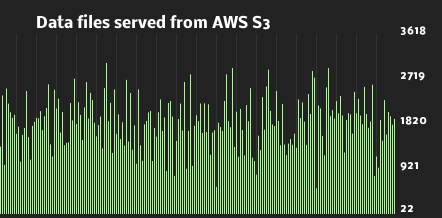

Welcome to {elliot.js}
{elliot.js} was created to fill a need for graphing near real time events in various web
projects. It has been used to produce graphs for log analytics, customer actions, monitoring
and similar services.

Special requirements? {elliot.js} is highly configurable.
You can easily change background colors, bar sizes, colors, fonts, update frequenzy etc.
Have a look at our examples for some inspiration.
{elliot.js} is open source! It is licenced under
Apache License version 2.0. You can fetch or fork the code at
GitHub.
{elliot.js} relies on the HTML 5 <canvas> and regular JavaScript.
It is widely supported, both on mobile platforms and desktop browsers. Have a look at
http://caniuse.com/#feat=canvas for more detailed information
about <canvas> browser support.
Usage
It is dead easy to integrate {elliot.js} into
your applications. Here's code for the graph "Cars inside the city gates".
{% highlight html %}
{% endhighlight %}
As you might have noticed. We initiate {elliot.js}
by calling Elliot() which takes two arguments; the canvas tag id and a configuration object.
The next thing we need to do is to add data to the graph. This is done with a simple JavaScript call to
elliot.add(float) or elliot.remove(float). In the configuration above, we set
incrementalValues to true, which means that {elliot.js}
will keep track of the current value all the time and all you need to do is to adjust it
with the add() and remove() functions. Here's an example:
{% highlight javascript %}
elliot.add(10);
elliot.remove(5);
{% endhighlight %}
Boring example? Indeed! Let's try to get some continuous data
inserted into {elliot.js}.
{% highlight javascript %}
// Add some initial data before the loop
elliot.add(Math.floor(2500000));
// Create an infinite loop which loops every second
var dataInterval = setInterval(function () {
// Add some data
elliot.add(Math.floor((Math.random()*2200)+1));
// And remove some other data (which is
// likely to be smaller than the data added)
elliot.remove(Math.floor((Math.random()*1500)+1));
}, 1000);
{% endhighlight %}
More documentation can be found in the bundled documentation.